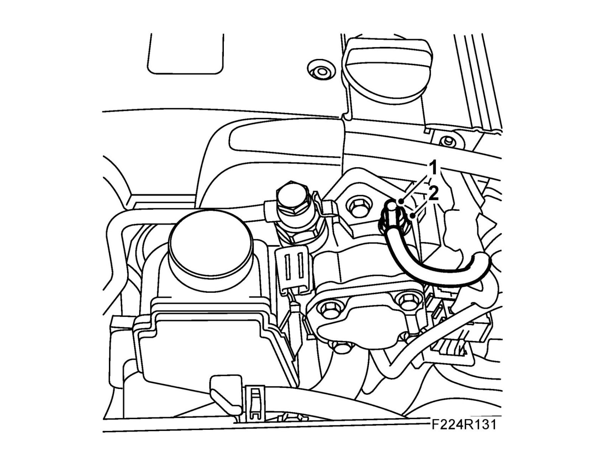
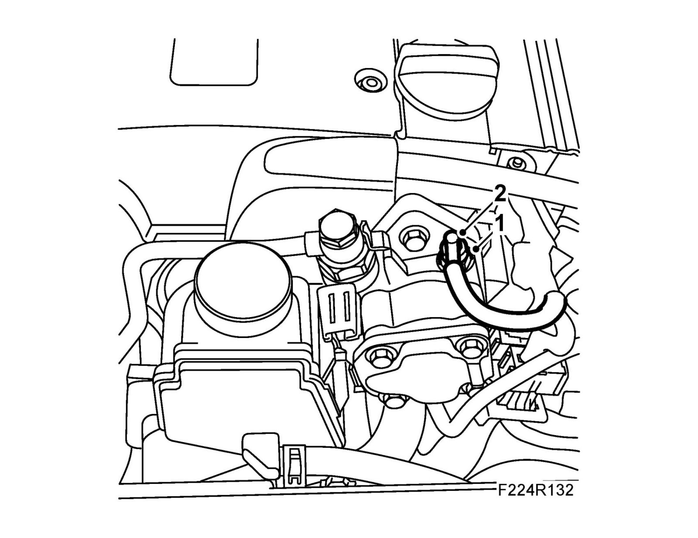

Power Steering Pressure Switch: Service and Repair
Power steering fluid pressure sensor (739)To remove
1. Remove the electrical connection from the sensor.

2. Carefully remove the pressure sensor as it contains loose parts.
To fit
1. Fit the sensor.

2. Fit the electrical connection to the sensor.